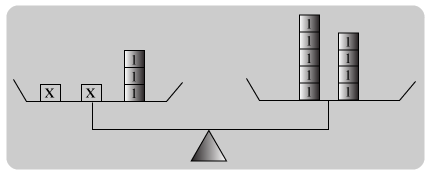
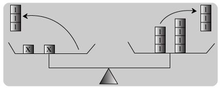
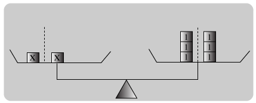
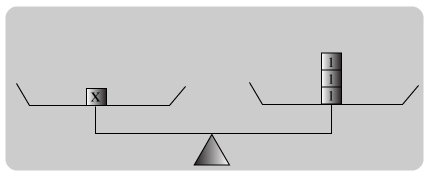

We have come across some number games like
\( \circ \) + 3 = 8
where we have to fill in the circle with any possible number to make the sentence true. Suppose we replace the circle by the letter x.
x + 3 = 8
x + 3 = 8 is called an equation in one unknown x.
A solution or root of an equation is a value of the unknown that will make the equation true. For example, x = 5 is a solution of the above equation but x = 1 is not.To solve an equation means to find the solution(s) to the equation.
A simple equation the form ax + b = c, where a, b and c are constants and a 1 0 is called a linear equation. We can relate the idea of a balance to a linear equation to help us solve it. Let us illustrate how this can be done by using the equation 2x + 3 = 9.
Suppose the values on both sides of an equation represent masses. Let's place these masses on the left-hand side (LHS) and the right-hand side (RHS) of a balance as shown below.
| Balance | Equation |
|---|---|
|

|
2x + 3 = 9 |
| Remove 3 unit masses from both sides.

|
Subtract 3 from both sides: 2x + 3 - 3 = 9 - 3 2x = 6 |
| Divide each side into equal parts:

|
Divide both sides by 2: \( \frac{2x}{2} = \frac{6}{2} \) |
| The parts on both sides are equal,

|
x = 3 |
Hence x = 3 is a solution of the equation 2x + 3 = 9.
In general, an equation remains unchanged when both sides are added, subtracted. multiplied or divided by the same number.
We apply the distributive law of multiplication over addition to help us solve equation involving brackets.
Eg:
Solve the equation 9(x + 1) = 2(3x + 8)
Sol:
9(x + 1) = 2(3x + 8)
9x + 9 = 6x + 16 Expand each side.
9x + 9 - 6x = 6x + 16 - 6x Subtract 6x from both sides.
3x + 9 - 9 = 16 - 9 Subtract 9 from both sides.
\( \frac{3x}{3} = \frac{7}{3} \) Divide each side by 3.
\( x = \frac{7}{3} \)
When the unknown of an equation is in the denominator of a term, the equation is called a fractional equation. Examples of fractional equations are:
\( \frac{6}{x - 2} = a \ and \ \frac{1}{x - 3} = \frac{2}{x} \) .
We can use multiplication to transform simple fractional equations into linear equations. In solving fractional equations, it is important to check the solutions. They cannot be those values that make a denominator of the original equation zero.
Eg:
Solve the equation \( \frac{6}{x - 2} = 3 \)
Sol:
\( \frac{6}{x - 2} = 3 \)
Multiplying both sides by x - 2, we have:
\( (x - 2) \left ( \frac{6}{x - 2} \right ) = (x - 2)(3) \)
6 = 3(x - 2) Notice that the denominator (x - 2)
6 = 3x - 6 does not appear in this equation
3x = 12
\( x = \frac{12}{3} \)
\( \therefore \) x = 4
Sometimes we can use linear equations to represent real-life situations. Then by can solving the linear equations, we can actually provide solutions to real-life problems. It is therefore useful to learn how to form linear equations from given information.
In the following class activity, we refer to the problem posed at the beginning of this chapter. Here, we shall learn how we can use a linear equation to solve for any unknown quantity.
Eg:
The sum of three consecutive integers is 111. Find the integers.
Sol:
Step 1: We are going to find the three integers.
Step 2: Let x be the smallest integer.
Step 3: Middle integer = x + 1
Largest integer = x + 2
\( \therefore \)
the equation is 3x + 3 = 111 .
Step 4: Sum of 3 integers = 111
\( \therefore \) x + (x + 1) + (x + 2) = 111
3x + 3 = 111
Step 5:
3x = 111 - 3
3x = 108
\( x = \frac{108}{3} \)
\( \therefore \) x = 36
Step 6:
The three integers are 36, 36 and 38.
Solve the equation x - 5 = 11.
Solution:
x - 5 = 11
x - 5 + 5 = 11 + 5 Add 5 to both sides.
x = 16
Solve the equation x + 6 = 13.
Solution:
x + 6 = 13
x + 6 - 6 = 13 - 6 Subtract 6 from both sides
x = 7
Solve the equation \( \frac{x}{4} = 7 \) .
Solution:
\( \frac{x}{4} = 7 \)
\( \frac{x}{4} \times 4 = 7 \times 4 \) Multiply both sides by 4.
x = 28.
Solve the equation - 6x = 8.
Solution:
- 6x = 8
\( \frac{- 6x}{6} = \frac{8}{-6} \) Divide both sides by -6
\( \frac{- 4}{3} \)
Solve the equation \( 8 - \frac{3}{5}x = - 2 \)
Solution:
\( \begin{align} 8 - \frac{3}{5}x = - 2 \\\\[3pt]
8 - \frac{3}{5}x - 8 = 2 - 8 \\\\[3pt]
- \frac{3}{5}x = - 10 \\\\[3pt]
- \frac{3}{5} x \times \left ( - \frac{5}{3} \right ) = -10 \times \left ( - \frac{5}{3} \right ) \\\\[3pt]
x = \frac{50}{3} \end{align} \)
Solve the equation \( \frac{5(2x - 9)}{3} - 8 = 2x \)
Solution:
Multiply both sides by 3.
5(2x - 9) - 3(8) = 3(2x) Remove the brackets.
10x - 45 - 24 = 6x Subtract 6x from both sides.
10x - 69 - 6x = 0 Add 69 to both sides.
4x = 69 Divide both sides by 4.
\( x = \frac{69}{4} \)
Solve the equation \( \frac{3x + 2}{5} = \frac{4x - 7}{6} \) .
Solution:
\( \frac{3x + 2}{5} = \frac{4x - 7}{6} \)
Multiply both sides by 30.
\( 30 \left ( \frac{3x + 2}{5} \right ) = 30 \left ( \frac{3x + 2}{5} \right ) \)
6 (3x + 2) = 5(4x - 7)
18x + 12 = 20x - 35
18x + 12 - 20x = - 35
-2x = - 35 - 12
\( x = \frac{- 47}{-2} = \frac{47}{2} = 23 \frac{1}{2} \)
Solve the equation \( \frac{y}{5} + \frac{y - 3}{2} = 7 \)
Solution:
\( \begin{align} \frac{y}{5} + \frac{y - 3}{2} = 7 \\\\[3pt]
10 \left ( \frac{y}{5} \right ) 10 \left ( \frac{y - 3}{2} \right ) = 10(7) \end{align} \)
Multiply both sides by 10 which is the LCM of 2 and 5.
2y + 5(y - 3) = 70
2y + 5y - 15 = 70
7y = 70 + 15
\( \therefore \ y = 12 \frac{1}{7} \)
Four quantities x, u, v and t are related by the formula \( s = \frac{1}{2} (u + v)t \)
find the values of v given that u = 10, s = 15 and t = 3.
Solution:
Putting u = 10, a = 15 and t = 3 into \( s = \frac{1}{2}(u + v)t \) ,we have the equations:
\( 15 = \frac{1}{2}(10 + v)(3) \) v is the unknown.
\( 15 \times \frac{2}{3} = 10 + v \) solve for v
10 = 10 + v
v = 10 - 10
v = 0.
Solve the equation \( 15 \times \frac{t}{t + 3} = 1 \frac{1}{4} \)
Solution:
\( 15 \times \frac{t}{t + 3} = 1 \frac{1}{4} \)
Multiplying both sides by (4 + 3), we have:
\( 4(t + 3) \times \frac{t}{t + 3} = 4(t + 3) \times \frac{5}{4} \)
4t = 5(t + 3)
4t = 5t + 15
t = - 15
Mrs. Kumar's 3 times as old asold as her daughter. In 5 years' time, the sum of their ages will be 62 years. Find the daughter's present age.
Solution:
Let the daughter's present age by x years.
Mrs. Kumar's present age = 3x years.
Mrs. Kumar's age = (3x + 5) years.
In 5 years time,
her daughter's age = (x + 5) years.
Since their total age in 5 years' time will be 62,
we have:
(3x + 5) + (x + 5) = 62
3x + 5 + x + 5 = 62
4x = 62 - 10
\( x = \frac{52}{4} \)
\( \therefore \) x = 13
Hence the daughter's present age is 13 years.
The price of a table is Rs. 100 less than 6 times the price of a chair. A similar set of one table and 4 chairs is priced at Rs. 1400. Find the price of a chair.
Solution:
Let the price of a chair be Rs. x.
Price of a table = Rs. (6x - 100)
Price of a table and 4 charis = Rs. 1400
(6x - 100) + 4x = 1400
6x - 100 + 4x = 1400
10x = 1400 + 100
\( x = \frac{1500}{10} = 150 \)
the price of a chair is Rs. 150.
Solve 5(x - 3) - 7(6 - x) = 24 - 3(8 - x) - 3.
Solution:
Removing brackets, 5x - 15 - 42 + 7x = 24 - 24 + 3x - 3
collecting terms, 12x - 57 = 3x - 3.
Subtracting 3x from each side, we get
9x - 57 = -3.
Adding 57 to each side, we have
9x = 54.
Dividing by 9, x = 6.
\( \frac{4x}{5} - \frac{3}{10} = \frac{x}{5} + \frac{x}{5} \)
Solution:
Here it is convenient to begin by clearing the equation of fractional coefficients. This can be done by multiplying every term on each side of the equation by the least common multiple of the denominators.
Hence, multiplying throughout by 20,
16x - 6 = 4x + 5x.
Subtracting 9x from each side, 7x - 6 = 0.
Adding 6 to each side, 7x = 6,
Dividing by 7, \( x = \frac{6}{7}. \)
[Verification:] when x = \( \frac{6}{7} \)
the left side \( \frac{4}{5} \times \frac{6}{7} - \frac{3}{10} = \frac{4 - 21}{70} = \frac{27}{10} \)
the right side = \( \frac{1}{5} \times \frac{6}{7} + \frac{1}{4} \times \frac{6}{7} = \frac{24 + 30}{140} \)
= \( \frac{54}{140} = \frac{27}{90} \)
Solve 5x - (4x - 7)(3x - 5) = 6 - 3 (4x - 9)(x - 1).
Solution:
Here the products (4x - 7) (3x - 5) and (4x - 9) (x - 1) must be multiplied out, or written down by inspection.
Forming the products, we have
\( 5x - (12x^2- 41x + 35) = 6 - 3 (4x^2 - 13x + 9) \) ;
and by removing brackets.
\( 5x - 12x^2 + 41x - 35 = 6 - 12x^2 + 39x - 27 \) .
The terms \( - 12x^2 \) may be removed from each side without altering the equality; thus
5x + 41x - 35 = 6 + 39x - 27.
Transposing, 5x + 41x - 39x = 6 - 27 + 35;
collecting terms, 7x = 14;
\( \therefore \) x = 2.
Solve 7x - 5{x - [7 - 6(x - 3)]} = 3x + 1.
Solution:
Removing brackets, we have
7x - 5{x - [7 - 6x + 18]} = 3x + 1,
7x - 5[x - 25 + 6x] = 3x + 1,
7x - 5x + 125 - 30x = 3x + 1;
transposing, 7x - 5x - 30x - 3x = 1 - 125;
collecting terms, -31x = - 124;
\( \therefore \) x = 4.
Solve \( 4 - \frac{x - 9}{8} = \frac{x}{22} - \frac{1}{2} \)
Solution:
Multiply by 88, the least common multiple of the denominators;
thus 352 - 11(x - 90 = 4x - 44;
removing brackets, 352 - 11x + 99 = 4x - 44;
transposing, - 22x - 4x = -44 - 352 - 99;
collecting terms and changing signs, 15x = 495;
\( \therefore \) x = 33.
Solve \( \frac{x - 4}{3} + \frac{2x - 3}{35} = \frac{5x - 32}{9} - \frac{x + 9}{28} \)
Solution:
Multiplying throughout by 9, we have
\( 3x - 12 + \frac{18x - 27}{35} = 5x - 32 - \frac{9x + 81}{28} \)
transposing, \( \frac{18x - 27}{35} + \frac{9x + 81}{28} = 2x - 20 \)
Now clear of fractions by multiplying by 5 \( \times \) 7 \( \times \) 4 or 140;
thus 72x - 108 + 45x + 405 = 280x - 2800;
\( \therefore \) 2800 - 108 + 405 = 280x - 72x - 45x;
\( \therefore \) 3097 = 163 x;
\( \therefore \) x = 19
Solve \( \6x + 25 - \frac{1}{9} x = 1.8 - 0.75x - \frac{1}{3} \)
Solution:
Expressing the decimals as vulgar fractions, we have
\( \6x + 25 - \frac{2}{3}x + \frac{1}{4} - \frac{1}{9}x = 1 \frac{3}{9} - \frac{3}{4}x - \frac{1}{3}; \)
clearing of fractions, 24x + 9 - 4x = 68 - 27x - 12;
transposing, 24x - 4x + 27x = 68 - 12 - 9,
47x = 47;
\( \therefore \) x = 1.
Solve 0.375x - 1.875 = 0.12x + 1.185.
Solution:
Transposing, 0.375x -0.12x = 1.185 + 1.875;
collecting terms, 0.375 - 0.12x = 1.185 + 1.875;
collecting terms, (0.375 - 0.12) x = 3.06,
that is, 0.255x = 3.06;
\( x = \frac{3.06}{0.255} = 12 \)